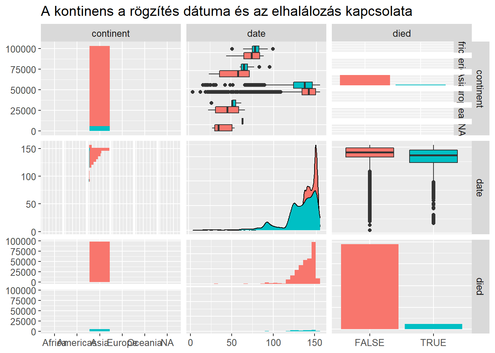
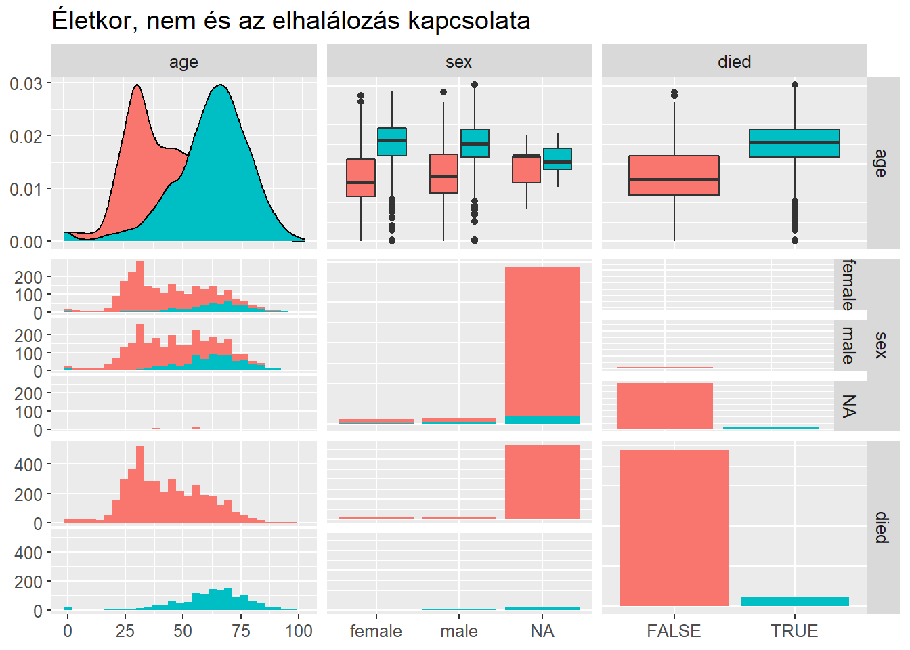

Döntési fa
Az egyik talán legfontosabb kérdés a járványügyben, hogy mennyire halálos a vírus. Már a megjelenésekor nagyon hamar ismertté vált a tény: elsősorban az idősekre és krónikus betegre jelent kockázatot. Ennek a ténynek empirikus teszteléséhez olyan adattáblára van szükségünk, melyben rögzítésre kerülnek a megfertőzöttek demográfiai adatai és az eset végső kimenete (ezt a fajta adattípust nevezik “line list”-nek).
Adatok bemutatása
Forrás
A fentebb leírt célra lett létrehozva egy nyílt projekt1, amely során ezeket az adatokat több országra gyűjtik ki és teszi online elérhetővé.
Az adattábla összesen 2676311 megfigyelést tartalmaz 33 változóval. Azonban a változók jelentős része használhatatlan elemzésre és jelentős mértékben van szükség az adatok tisztítására is. Egyetlen példa említéseként a kimenetben nem egyszerűen died vagy elhunyt szerepelt, hanem annak számos szinonímája is, amelett, hogy sok esetben nincs elérhető adat.
Adatok elemzéshez való előkészítése
Az adatok megtiszítása előtt el kell döntenünk, hogy mely változókkal is érdemes foglalkozni, mivel sajnos számos változó esetében hiányzik rengeteg sor a táblában.
dat %>%
apply(2, function(x) sum(is.na(x))) %>%
{data.frame(var = names(.), nobs = nrow(dat)-., robs = (nrow(dat)-.)/nrow(dat))} %>%
set_names('var', 'Hiánytalan adatok száma', 'Hiánytalanok aránya') %>%
gt(
rowname_col = "var"
) %>%
fmt_percent(
columns = vars('Hiánytalanok aránya'),
dec_mark = ','
) %>%
tab_header(title = 'Adattáblában lévő hiánytalan megfigyelések aránya')| Adattáblában lévő hiánytalan megfigyelések aránya | ||
|---|---|---|
| Hiánytalan adatok száma | Hiánytalanok aránya | |
| ID | 2676311 | 100,00% |
| age | 578018 | 21,60% |
| sex | 580157 | 21,68% |
| city | 1698630 | 63,47% |
| province | 2223647 | 83,09% |
| country | 2676196 | 100,00% |
| latitude | 2676250 | 100,00% |
| longitude | 2676250 | 100,00% |
| geo_resolution | 2676250 | 100,00% |
| date_onset_symptoms | 261599 | 9,77% |
| date_admission_hospital | 116211 | 4,34% |
| date_confirmation | 2567822 | 95,95% |
| symptoms | 0 | 0,00% |
| lives_in_Wuhan | 0 | 0,00% |
| travel_history_dates | 2611 | 0,10% |
| travel_history_location | 9222 | 0,34% |
| reported_market_exposure | 0 | 0,00% |
| additional_information | 45855 | 1,71% |
| chronic_disease_binary | 2676311 | 100,00% |
| chronic_disease | 0 | 0,00% |
| source | 2109347 | 78,82% |
| sequence_available | 0 | 0,00% |
| outcome | 307382 | 11,49% |
| date_death_or_discharge | 0 | 0,00% |
| notes_for_discussion | 0 | 0,00% |
| location | 13376 | 0,50% |
| admin3 | 80434 | 3,01% |
| admin2 | 826054 | 30,87% |
| admin1 | 1257558 | 46,99% |
| country_new | 2645758 | 98,86% |
| admin_id | 2676250 | 100,00% |
| data_moderator_initials | 1742983 | 65,13% |
| travel_history_binary | 2610732 | 97,55% |
Az adatok hiányosságának és felhasználhatóságának figyelembevételével az alábbi változókat érdemes bevonni a modellbe:
- életkor
- nem
- ország
- van-e krónikus betegsége
- fertőződöttség kimutatásának ideje
- földrajzi szélesség
- földrajzi hosszúság
- megbetegedés kimenete
A változók tisztítása során egyik legfontosabb, hogy a kimenet oszlopban összevontuk minden elhalálozásra megfelelő szinonímát egységesen az elhunyt kategóriába, és minden felépültnek megfelelőt a felépültbe. Mivel jelen elemzés kutatási kérdése, hogy mi a valószínűsége, hogy valaki túléli, így elvetettünk minden megfigyelést, amely esetében az alany még betegség alatt áll, vagy a kimenet ismeretlen. Az ország oszlopból kontinensként új magyarázó változót határoztunk meg, és az évek esetében ismeretlennek vetük azokat, ahol intervallum került megadásra2.
dat %>%
select(outcome, age, sex, country, chronic_disease_binary, latitude, longitude,
date_confirmation) %>%
mutate(
continent = countrycode::countrycode(country, origin = 'country.name',
destination = 'continent'),
date = lubridate::dmy(date_confirmation),
age = as.numeric(ifelse(str_detect(age, '-'), NA, age))
) %>%
mutate( # cleaning the depedent var
outcome = case_when(
outcome == 'death' ~ 'died',
outcome == 'died' ~ 'died',
outcome == 'Death' ~ 'died',
outcome == 'dead' ~ 'died',
outcome == 'Dead' ~ 'died',
outcome == 'Died' ~ 'died',
outcome == 'Deceased' ~ 'died',
outcome == 'discharge' ~ 'survived',
outcome == 'discharged' ~ 'survived',
outcome == 'Discharged' ~ 'survived',
outcome == 'Discharged from hospital' ~ 'survived',
outcome == 'recovered' ~ 'survived',
outcome == 'released from quarantine' ~ 'survived',
outcome == 'recovered' ~ 'survived',
outcome == 'Recovered' ~ 'survived',
outcome == 'Recovered' ~ 'survived',
outcome == 'Recovered' ~ 'survived',
T ~ 'NA'
)
) %>%
filter(outcome != 'NA') %>%
mutate(
died = outcome == 'died'
) %>% select(-outcome, -date_confirmation) %>%
{dat <<- .}Az így kapott új adattáblában már csupán 103616 megfigyelés és 9 változó szerepel.
| Adattábla modellezésre előkészítve | ||||||||
|---|---|---|---|---|---|---|---|---|
| age | sex | country | chronic_disease_binary | latitude | longitude | continent | date | died |
| 78 | male | Italy | FALSE | 45.297748 | 11.65838 | Europe | 2020-02-21 | TRUE |
| 61 | female | Singapore | FALSE | 1.353460 | 103.81510 | Asia | 2020-02-14 | FALSE |
| 28 | male | Singapore | FALSE | 1.353460 | 103.81510 | Asia | 2020-02-14 | FALSE |
| 56 | female | Singapore | FALSE | 1.353460 | 103.81510 | Asia | 2020-02-14 | FALSE |
| 79 | female | Singapore | FALSE | 1.353873 | 103.86048 | Asia | 2020-02-14 | FALSE |
| 26 | male | Singapore | FALSE | 1.353460 | 103.81510 | Asia | 2020-02-15 | FALSE |
dat %>%
select(age, sex, died) %>%
GGally::ggpairs(mapping = aes(color = died),
title = 'Életkor, nem és az elhalálozás kapcsolata')
dat %>%
select(continent, date, died) %>%
GGally::ggpairs(aes(color = died),
title = 'A kontinens a rögzítés dátuma és az elhalálozás kapcsolata')
Az ábrákból sajnos gyorsan kiderül, hogy a kimeneti adatra való rászűrést követően az adattáblában már jórészt csak ázsiai országok képviseltetik magukat. Más kontintensekről származó adatok esetében ez az oszlop nem került megfelelően dokumentálásra.
dat %>%
group_by(continent, country) %>%
summarise(n = n()) %>%
ungroup() %>%
na.omit() %>%
mutate(
r = n/nrow(dat)
) %>%
arrange(continent) %>%
set_names('continent', 'country', 'n', 'n/sum(n)') %>%
gt(
rowname_col = 'country',
groupname_col = 'continent'
) %>%
fmt_percent(
columns = 'n/sum(n)',
) %>%
summary_rows(groups = T, columns = vars(n), fns = list(TOTAL = 'sum')) %>%
summary_rows(groups = T, columns = vars('n/sum(n)'), fns = list(TOTAL = 'sum'), formatter = fmt_percent) %>%
tab_options(
summary_row.background.color = "#ACEACE",
row_group.background.color = "#FFEFDB"
) %>%
tab_header(title = 'Megfigyelések száma országonként', subtitle = 'Elsődleges adattisztítás után')| Megfigyelések száma országonként | ||
|---|---|---|
| Elsődleges adattisztítás után | ||
| n | n/sum(n) | |
| Africa | ||
| Algeria | 9 | 0.01% |
| Burkina Faso | 3 | 0.00% |
| Cabo Verde | 1 | 0.00% |
| Cameroon | 1 | 0.00% |
| Egypt | 2 | 0.00% |
| Eswatini | 1 | 0.00% |
| Ethiopia | 1 | 0.00% |
| Gabon | 1 | 0.00% |
| Gambia | 5 | 0.00% |
| Ghana | 7 | 0.01% |
| Niger | 1 | 0.00% |
| Nigeria | 1 | 0.00% |
| Sudan | 1 | 0.00% |
| Tanzania | 1 | 0.00% |
| Togo | 2 | 0.00% |
| Zimbabwe | 5 | 0.00% |
| TOTAL | 42.00 | 0.04% |
| Americas | ||
| Bahamas | 1 | 0.00% |
| Brazil | 4 | 0.00% |
| Canada | 6 | 0.01% |
| Cuba | 1 | 0.00% |
| Guyana | 2 | 0.00% |
| United States | 48 | 0.05% |
| TOTAL | 62.00 | 0.06% |
| Asia | ||
| China | 105 | 0.10% |
| India | 98645 | 95.20% |
| Iran | 4 | 0.00% |
| Japan | 8 | 0.01% |
| Malaysia | 6 | 0.01% |
| Nepal | 2 | 0.00% |
| Philippines | 4505 | 4.35% |
| Singapore | 118 | 0.11% |
| South Korea | 26 | 0.03% |
| Thailand | 2 | 0.00% |
| United Arab Emirates | 2 | 0.00% |
| Vietnam | 32 | 0.03% |
| TOTAL | 103,455.00 | 99.84% |
| Europe | ||
| France | 7 | 0.01% |
| Germany | 3 | 0.00% |
| Italy | 7 | 0.01% |
| Romania | 8 | 0.01% |
| San Marino | 1 | 0.00% |
| Spain | 2 | 0.00% |
| Switzerland | 3 | 0.00% |
| TOTAL | 31.00 | 0.03% |
| Oceania | ||
| Australia | 24 | 0.02% |
| TOTAL | 24.00 | 0.02% |
A táblázatból jól látható, hogy a legtöbb felhasználható megfigyelésünk Indiából származik. Logikusnak tűnik egy dummy változót létrehozni ezért Indiára (india = {TRUE, ha Indiából származik, FALSE egyébként}).
dat %>%
mutate(
india = country == 'India'
) %>%
select(-country, -continent, -latitude, -longitude) %>%
{dat <<- .}| Végső adattábla modellezéshez | |||||
|---|---|---|---|---|---|
| age | sex | chronic_disease_binary | date | died | india |
| 78 | male | FALSE | 2020-02-21 | TRUE | FALSE |
| 61 | female | FALSE | 2020-02-14 | FALSE | FALSE |
| 28 | male | FALSE | 2020-02-14 | FALSE | FALSE |
| 56 | female | FALSE | 2020-02-14 | FALSE | FALSE |
| 79 | female | FALSE | 2020-02-14 | FALSE | FALSE |
| 26 | male | FALSE | 2020-02-15 | FALSE | FALSE |
Open COVID-19 Data Working Group, Detailed Epidemiological Data from the COVID-19 Outbreak, http://virological.org/t/epidemiological-data-from-the-ncov-2019-outbreak-early-descriptions-from-publicly-available-data/337, letöltve: 2020.12.28.↩︎
Az intervallumok hossza nem egyezett meg.↩︎